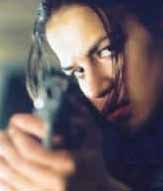

É impressionante o poder que a mídia e o cinema têm sobre as pessoas. Não a toa as maiores empresas investem em filmes americanos para impor tendências de comportamento e aceitação de idéias.
Depois do controverso filme Tropa de Elite muitas pessoas, que nunca antes disseram a palavra “Polícia” a não ser para reclamar da corrupção, passaram a se interessar pelo serviço policial, e isso é bom! Melhor seria se o interesse fosse com relação ao serviço policial em si, e não meramente ao status de “combatente tático”, mas essa é a realidade.Desde que começou a BOPEmania nossa caixa de mensagens é diariamente lotada com e-mails pedindo informações sobre o BOPE, ou como ser do BOPE, e confesso que diante da preguiça das pessoas em buscar informações acabo deletando a mensagem sem responder.
Agora, a PM acena com a abertura às mulheres para preencher as fileiras do Batalhão de Operações Especiais, e recebemos nova enxurrada de mensagens. Por isso, resolvi tentar colocar a resposta que vai atender a todas essas pessoas:Como entrar para o BOPE ?
Bom, primeiramente você tem que ser aprovado no concurso da PMERJ. Depois de já nomeado como policial militar, deve ficar por pelo ao menos 2 anos trabalhando em batalhões, e ter um bom comportamento. Depois é só se candidatar, submeter-se à exames físicos e psicológicos e participar dos cursos internos.Resumindo, primeiro passe no concurso da PMERJ, depois procure saber sobre o BOPE.
Podem entrar mulheres no BOPE ?
A primeira regra é a mesma dos homens. Primeiro seja aprovada em concurso da PMERJ, depois se preocupe em saber como fazer parte do BOPE. O Comando do BOPE está planejando para o segundo semestre de 2008 a realização de um Curso de Ações Táticas específico para o público feminino, dependendo de aprovação pelo Alto Comando da PMERJ. Não haverá diferença curricular entre o atual curso e o específico para o público feminino, mas os preparadores físicos do BOPE estudam uma forma de adaptar as peculiaridades do sexo feminino aos rigores da prova física e de habilidade específica, bem como às instruções do curso propriamente dito.Isto posto, leitores e leitoras que chegaram a este blog procurando saber como entrar para o BOPE: se for este seu desejo, preste o próximo concurso para a PM, e depois de aprovado(a), após 2 anos de serviço, candidate-se a uma vaga junto aos Caveiras fluminenses.